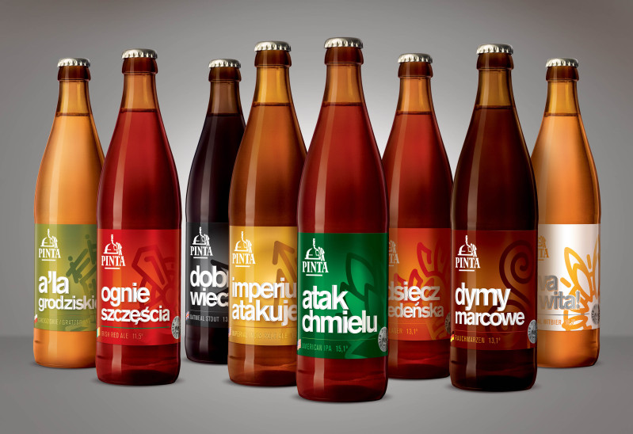

28 marca 2011 roku powstała pierwsza warka Ataku Chmielu - to intensywnie nachmielone piwo rozpoczęło zmiany w polskim piwowarstwie, widoczne dziś w pubach i sklepach. Korzystamy z doświadczeń które przez lata zdobywaliśmy jako piwowarzy domowi, organizatorzy festiwali i konkursów piwa, autorzy artykułów i książek na temat piwowarstwa. Jako PINTA pierwsi w Polsce zaproponowaliśmy amerykańską wersję IPA - Atak Chmielu (2011) oraz ponad 100 innych - ale, lagerów, sahti i piw kwaśnych. Jako pierwszy polski browar pojechaliśmy warzyć za granicę - tak powstał Lublin to Dublin - Stout Owsiany uwarzony w Irlandii wspólnie przez PINTĘ i O'Hara's. Od tamtego czasu warzyliśmy we Francji, Japonii, Brazylii i we Włoszech.
Wkładamy w naszą pracę wszystkie swoje doświadczenia i pasję. Uwielbiamy podróże - nawet w te najdalsze zawsze zabieramy PINTĘ. I zawsze przywozimy ogromną ilość inspiracji, którymi dzielimy się z Wami.